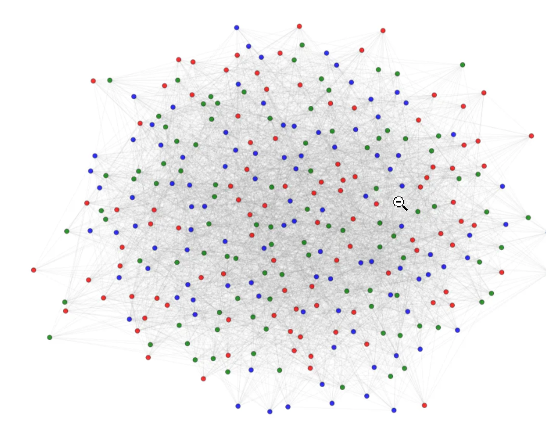
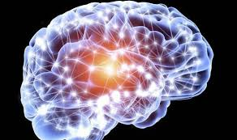

About Me
Hi there! Since this is a personal portfolio, it is going to be a little self-centered, to say the least. I hope this doesn't turn out to be a cliché
'I am so cool and smart' kind of portfolio.
I am a final year undergraduate at the Indian Institute of Technology, Hyderabad, in the department of Biomedical Engineering. I am interested in biological physics and applied mathematics.
In the future, I might turn out to be a researcher or an unemployed person (the latter being more likely).
What I'm Interested in(no jargon)
This explaination is inspired by Divyoj Singh's page.
Just as Newton’s laws explain mechanics and Maxwell’s equations explain electromagnetism, can we build fundamental laws for life? We try to capture this complex phenomenon with equations and models and iteratively update our assumptions when things don't work out.
Blogs
I have started a Medium page named '3AM Thoughts'. The articles are primarily on complexity science applied to different systems.
The primary purpose of this site, as of now, is to host my Medium articles without having to go through the cringe on LinkedIn. All of the articles have and will continue to have flaws, but at the end of the day, they are ideas or models, and as the famous statistician once said, "All models are wrong, but some are useful." I don’t claim to be an expert out here.
Unlike purely data-driven models, I wish to look into mechanistic models that are based on fundamental principles and bring out some cool aspects of niche subjects.
Here are articles that I have written so far:
|

|
The Chaos of Karma: From Cause to Consequence
Abhishek Raje
3AM Thoughts, Jul 11, 2025
medium article
Chaos Theory is the study of systems that are highly sensitive to initial conditions, leading to seemingly random and unpredictable behavior despite being governed by deterministic laws.
This article looks at how chaos theory can be applied to understand the concept of karma, exploring the intricate relationship between actions and their consequences to provide an explanation for cause and effect in life.
|
|
|
Programmed by Evolution: The Algorithm Driving the Future of Humanity
Abhishek Raje
3AM Thoughts, Jun 18, 2025
medium article
Evolution is a random, undirected process that has led to the incredible diversity of life on Earth. However, despite its randomness, evolution has produced organisms that are remarkably robust.
This article explores the idea that we can build a better understanding of natural and artificial systems by looking at or applying an evolutionary perspective.
|

|
Beauty Lies in the Ease (Not Eyes) of the Beholder
Abhishek Raje
3AM Thoughts, Aug 17, 2025
medium article
The human perception of beauty has long been considered subjective, varying across cultures and individuals. However, research suggests that there may be underlying principles that govern our aesthetic preferences.
This article looks at the objective and subjective aspects of beauty, exploring how factors shape our understanding of what is considered beautiful.
|
|

|
Does the brain do math, or does math do the brain?
Abhishek Raje
Summer of Math Exposition, Sept 3, 2025
article
This is an introductory article on computational neuroscience,which is an interdisciplinary field that combines neuroscience, mathematics, and computer science to understand how the brain processes information.
The article explores some elementary mathematical models that describe neural information processing , which gives rise to the emergent property of 'Natural Intelligence' .
It is put together as a part of the 'Summer of Math Exposition' by the 3Blue1Brown .
|
Upcoming Articles
Here are some articles I'm currently working on:
- Explaining hierarchical societal structures using control systems
- A Bayesian dynamical model for political power
|
Contact Me
You can reach me at: bm22btech@iith.ac.in. We can possibly collaborate on some interesting ideas, if you are Interested.
|
{kind=link}